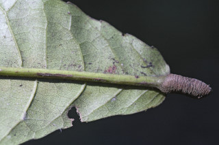
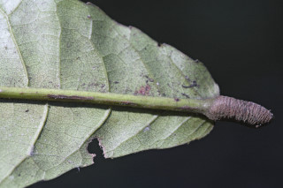

Tall trees with plank buttresses, up to 40 m tall.
ಹಲಗೆ ಮಾದರಿಯ ಆನಿಕೆಗಳನ್ನುಳ್ಳ,40 ಮೀ. ಎತ್ತರದವರೆವಿಗೆ ಬೆಳೆಯುವ ಮರಗಳು
40 മീറ്റര് വരെ ഉയരത്തില് വളരുന്ന, വപ്രമൂലത്തോടുകൂടിയ വന്മരങ്ങള്.
பெரிய மரம் மற்றும் தாங்கு வேர்களுடையது (பட்ரஸ்டு), 40 மீ. உயரம் வரை வளரக்கூடியது
Bark smooth, mottled with grey and white.
ತೊಗಟೆ ಬೂದು ಮತ್ತು ಬಿಳಿ ಚುಕ್ಕೆಗಳಿಂದ ಕೂಡಿದ್ದು ನಯವಾಗಿರುತ್ತವೆ.
നരച്ചതും വെളുത്തതുമായ കുത്തുകളുളള, മിനുസമാര്ന്ന പുറംതൊലി.
மரத்தின் பட்டை வழுவழுப்பானது, மரத்தின் பட்டை ஒழுங்கற்ற சாம்பல் மற்றும் வெண்மையான நிறமுடைய புள்ளிகளுடையது.
Branches horizontal; branchlets thick, with scars of fallen leaves, tomentose when young.
ಕವಲುಗಳು ಲಂಬ ರೇಖೆಗೆ ಸಮ ಕೋನದಲ್ಲಿರುತ್ತವೆ;ಕಿರುಕೊಂಬೆಗಳು ದಪ್ಪವಾಗಿದ್ದು ಎಲೆಉದುರಿದ ಗುರುತು ಸಮೇತವಿದ್ದು ಎಳೆಯದಾಗಿರುವಾಗ ದಟ್ಟ ಮೃದು ತುಪ್ಪಳದಿಂದ ಕೂಡಿರುತ್ತವೆ.
ശാഖകള് തിരശ്ചീനമാണ്; ഇളതായിരിക്കുമ്പോള് കനത്ത രോമാവൃതവും, ഇല കൊഴിഞ്ഞ അടയാളങ്ങളുളളതുമായ, കനത്ത ഉപശാഖകള്.
கிளைகள் கிடைமட்டமானது; சிறிய நுனிக்கிளைகள் தடித்தது, இலைகள் விழுந்த தழும்புகளை கொண்டது, புதிய சிறிய கிளைகளில் அடர்ந்த மென்உரோமங்கள் கொண்டவை.
Leaves simple, alternate, spiral, clustered at twig ends; stipules ovate, slightly incurved, caducous; petiole 1.5-5 cm long, densely rufous tomentose when young, planoconvex in cross section; lamina 9-30.5 x 5-14 cm, broadly obovate, apex rounded to obtuse sometimes retuse, base narrow and obtuse, margin subentire or crenate-serrate, coriaceous, densely rufous tomentose when young, later hairs remains only on midrib and nerves; midrib raised above; secondary_nerves 9-14 pairs, with hairy domatia in axils beneath; tertiary_nerves broadly percurrent.
ಎಲೆಗಳು ಸರಳವಾಗಿದ್ದು,ಪರ್ಯಾಯ ಮತ್ತು ಸುತ್ತು ಜೋಡನಾ ಮಾದರಿಯಲ್ಲಿದ್ದು ಕುಡಿಕೊಂಬೆಗಳ ತುದಿಯಲ್ಲಿ ಗುಂಪಾಗಿರುತ್ತವೆ;ಕಾವಿನೆಲೆಗಳು ಅಂಡಾಕಾರ ಹೊಂದಿದ್ದು,ಕೊಂಚ ಒಳಬಾಗಿರುತ್ತವೆ ಹಾಗೂ ಉದುರಿ ಹೋಗುವಂತಹವು;ತೊಟ್ಟುಗಳು 1.5 - 5 ಸೆಂ.ಮೀ. ಉದ್ದವಿದ್ದು,ಎಳೇಯದಾಗಿದ್ದಾಗ ಕೆಂಗಂದು ಬಣ್ಣದ ದಟ್ಟ ಮೃದು ತುಪ್ಪಳ ಸಮೇತವಿರುತ್ತವೆ ಹಾಗೂ ಅಡ್ಡ ಸೀಳಿದಾಗ ಸಪಾಟ ಪೀನ ಮಧ್ಯ ಆಕಾರ ಹೊಂದಿರುತ್ತವೆ ;ಪತ್ರಗಳು 9 – 30.5 X 5 – 14 ಸೆಂ. ಮೀ. ಗಾತ್ರ, ವಿಶಾಲ ಬುಗುರಿಯ ಆಕಾರ, ದುಂಡಾದುದರಿಂದ ಹಿಡಿದು ಚೂಪಲ್ಲದ ಅಥವಾ ಕೆಲವು ವೇಳೆ ದುಂಡಗಿನ ತುದಿಯಲ್ಲಿ ಕಚ್ಚುಳ್ಳ ಮಾದರಿಯ ತುದಿ, ಸಂಕುಚಿತ ಅಥವಾ ಸಂಕುಚಿತವಾಗಿದ್ದು ಚೂಪಲ್ಲದ ಬುಡ , ಉಪ-ನಯವಾದ ಅಥವಾ ದುಂಡೇಣು ಹಲ್ಲುಳ್ಳ- ಗರಗಸ ದಂತಿತ ಮಾದರಿಯ ಅಂಚು ,ಕಾಗದವನ್ನೋಲುವ ಮೇಲ್ಮೈ ಹೊಂದಿದ್ದು ಎಳೆಯದಾಗಿದ್ದಾಗ ದಟ್ಟವಾದ ಕೆಂಗಂದು ಬಣ್ಣದ ದಟ್ಟಮೃದು ತುಪ್ಪಳದಿಂದ ಕೂಡಿರುತ್ತವೆ;ಪತ್ರಗಳು ಬಲಿತಾಗ ಮಧ್ಯನಾಳ ಮತ್ತು ಇತರ ನಾಳಗಳ ಮೇಲೆ ಮಾತ್ರ ರೋಮಗಳಿರುತ್ತವೆ; ಮಧ್ಯ ನಾಳ ಪತ್ರದ ಮೇಲ್ಭಾಗದಲ್ಲಿ ಉಬ್ಬಿರುತ್ತದೆ;; ಎರಡನೇ ದರ್ಜೆಯ ನಾಳಗಳು 9-14 ಜೋಡಿಗಳಿದ್ದು ಪತ್ರದ ತಳಬಾಗದ ಅಕ್ಷಾಕಂಕುಳಿನಲ್ಲಿ ರೋಮಸಹಿತವಾದ ಸಹಜೀವಿ ಗೂಡುಗಳ ಸಮೇತವಿರುತ್ತವೆ; ಮೂರನೇ ದರ್ಜೆಯ ನಾಳಗಳು ವಿಶಾಲವಾಗಿ ಎಲೆ ದಿಂಡಿಗೆ ಅಡ್ಡವಾಗಿ ಕೂಡುವಂತಹವು.
ലഘുവായ ഇലകള്, ഏകാന്തരമായി, സര്പ്പിളമായി, തണ്ടുകളുടെ അറ്റത്ത് കൂട്ടമായി ക്രമീകരിച്ച വിധത്തിലാണ്; എളുപ്പം കൊഴിഞ്ഞുവീഴുന്ന, ചെറുതായി അകവളവുളള അണ്ഡാകാര അനുപര്ണ്ണങ്ങള്; ഇലഞെട്ടിന് 1.5 സെ.മീ മുതല് 5 സെ.മീ വരെ നീളം, ഇളതായിരിക്കുമ്പോള് റൂഫസ് രോമാവൃതമാണ്, ചേദത്തില് ഒരുഭാഗം പരന്നും മറുഭാഗം ഉയര്ന്നതുമായ ഘടനയാണ്; പത്രഫലകത്തിന് 9 സെ.മീ മുതല് 30.5 സെ.മീ വരെ നീളവും 5 സെ.മീ മുതല് 14 സെ.മീ വരെ വീതിയും, വീതിയേറിയ അപഅണ്ഡാകാരവുമാണ്, പത്രാഗ്രം വൃത്തകാരത്തിലോ ഉപകോണാകാരത്തിലോ ആണ്, ചിലപ്പോള് നടുവിലൊരു വെട്ടോടു കൂടിയ വൃത്താകാരമോ ആണ്, പത്രാധാരം വീതി കുറഞ്ഞതും, ഉപകോണാകാരത്തിലുമാണ്, അരികുകള് ഏതാണ്ട് അവിഭജിതമോ, ദന്തുരമോ ആണ്, ചര്മ്മില പ്രകൃതം, ഇളതായിരിക്കുമ്പോള് കനത്തില് റൂഫസ് രോമിലമാണ്, പിന്നീട് രോമങ്ങള് മുഖ്യസിരയിലും മറ്റ് ഞരമ്പുകളിലും മാത്രം നിലനില്ക്കുന്നു; മുഖ്യസിര മുകളില് ഉയര്ന്നതാണ്; കീഴ്ഭാഗത്ത് ഞരമ്പുകളുടെ കക്ഷങ്ങളില് രോമിലമായ ഡോമേഷ്യയുളള 9 മുതല് 14 വരെ ജോഡി ദ്വിതീയ ഞരമ്പുകള്; വീതിയേറിയ പെര്കറന്റ് വിധത്തിലുളള ത്രിതീയ ഞരമ്പുകള്.
இலைகள் தனித்தவை, மாற்றுஅடுக்கமானவை, சுழல் போன்ற அமைப்பு, சிறுகிளைகளின் நுனியில் இலைகள் கூட்டமாக மற்றும் நெருக்கமாக காணப்படும்; இலையடிச்செதில் முட்டை வடிவம், சிறிது வளைவானது, உதிரக்கூடியது; இலைக்காம்பு 1.5-5 செ.மீ. நீளமானது, அடர்த்தியான மென்மையான உரோமங்களை புதிய இலைக்காம்பில் காணப்படும், குறுக்குவெட்டுத் தோற்றத்தில் பிளேனோகான்வக்ஸ்; இலை அலகு 9-30.5 X 5-14 செ.மீ. அகன்ற தலைகீழ் முட்டை வடிவம், அலகின் நுனி வட்டமானது முதல் மழுங்கியது, சிலவற்றில் சிறிது பள்ளம் காணப்படும், அலகின் தளம் குறுகியது மற்றும் மழுங்கியது, அலகின் விளிம்பு முழுமையானது அல்லது பிறை-ரம்ப பற்களுடையது, கோரியேசியஸ், அடர்த்தியான மென்மையான உரோமங்கள் புதிய இலைகளிலும் காணப்படும், முதிர்ந்த இலைகளில் உரோமங்கள் மையநரம்பு மற்றும் நரம்புகளில் காணப்படும்; மையநரம்பு மேற்பரப்பில் உயர்ந்தது; இரண்டாம் நிலை நரம்புகள் 9-14 ஜோடிகள், உரோமங்களுடைய டொமேஸ்சியா இலையின் கீழ்பரப்பில் நரம்பின் கோணங்களில் காணப்படும்; மூன்றாம் நிலை நரம்புகள் அகன்ற பெர்க்கரண்ட்.
Inflorescence axillary or extra-axillary racemes, rufous tomentose; flowers white with laciniate petals; stamens many, anthers aristate.
ಪುಷ್ಪಮಂಜರಿಗಳು ಹೊರ ಅಕ್ಷಾ ಕಂಕುಳಿನಲ್ಲಿರುವ ಅಥವಾ ಅಕ್ಷಾಕಂಕುಳಿನಲ್ಲಿರುವ ಮಧ್ಯಾಭಿಸರ ಮಾದರಿಯವು ಹಾಗೂ ಕೆಂಗಂದು ಬಣ್ಣದ ದಟ್ಟಮೃದು ತುಪ್ಪಳದಿಂದ ಕೂಡಿರುವಂತಹವು.;ಹೂಗಳು ಬಿಳಿ ಬಣ್ಣ ಹೊಂದಿದ್ದು ಆಳವಾದ ಸೀಳಿಕೆಗಳ ಸಮೇತವಿರುವ ಪುಷ್ಪದಳಗಳ ಸಮೇತವಿರುತ್ತವೆ . ಕೇಸರಗಳು ಹೆಚ್ಚಿನ ಸಂಖ್ಯೆಯಲ್ಲಿದ್ದು ಊಬುಸಹಿತವಾದ ಪರಾಗಾಶಯಗಳನ್ನು ಹೊಂದಿರುತ್ತವೆ..
കനത്ത റൂഫസ് രോമാവൃതമായ, കക്ഷീയമോ അപകക്ഷീയമോ ആയ റസീം പൂങ്കുലകള്; മുനപ്പോടുകൂടിയ ധാരാളം കേസരങ്ങളും, ഏറെ വിഭജിതമായ വെളുത്ത ദളങ്ങളുളള പൂക്കള്.
மஞ்சரி இலைக்கோணங்களில் காணப்படும் அல்லது அதற்கு சற்று மேல் அமைந்த ரெசீம், மென்மையான உரோமங்களுடையது; மலர்கள் வெண்மையானது மற்றும் லேசினேட் அல்லி இதழ்கள்; மகரந்தங்கள் கணக்கற்றவை, ஈட்டி போன்ற மகரந்த பை உடையது.
Drupe, elliptic-oblong, to 5 x 3 cm; seed 1, compressed deeply tuberculate.
ಡ್ರೂಪ್ಗಳು ಅಂಡವೃತ್ತ – ಚತುರಸ್ರದ ಆಕಾರದಲ್ಲಿದ್ದು 5 X 3 ಸೆಂ ಮೀ.ವರೆಗಿನ ಗಾತ್ರ ಹೊಂದಿರುತ್ತವೆ;ಬೀಜ ಒಂದಿದ್ದು, ಸಂಕುಚಿತವಾಗಿದ್ದು ಆಳವಾದ ಗುಬುಟುಗಳನ್ನು ಹೊಂದಿರುತ್ತವೆ.
കനത്തില് മുഴപ്പുകളുളള ഒറ്റവിത്തുളള കായ, 5 സെ.മീ വരെ നീളവും 3 സെ.മീ വരെ വീതിയുമുളള, ദീര്ഘഗോള-ആയതാകാര ഡ്രൂപ്പ് ആണ്.
உள்ளோட்டுத்தசைகனி (ட்ரூப்), நீள்வட்டம்-நீள்சதுரமுடைய, 5 X 3 செ.மீ. வரை நீளமானது; ஒரு விதை கொண்டது, தட்டையானது மற்றும் கழலைகளுடையது.


 
